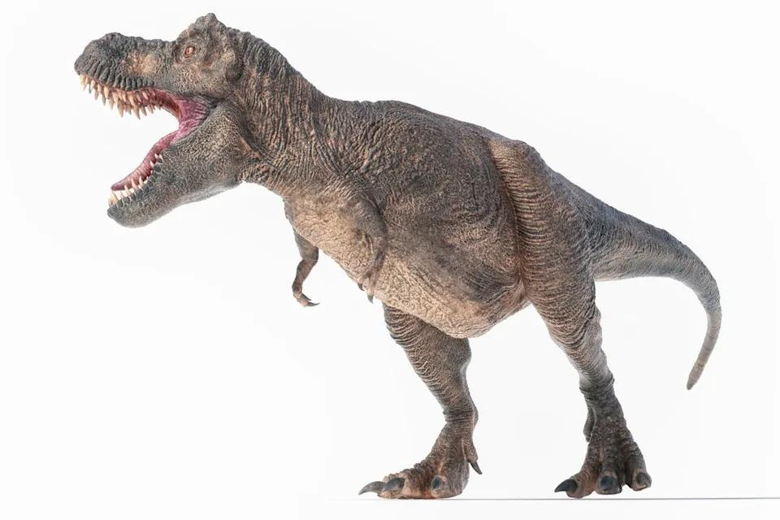
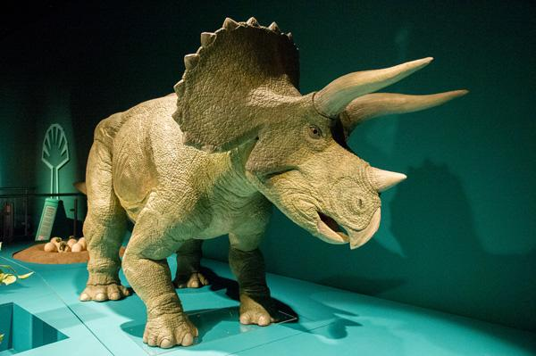
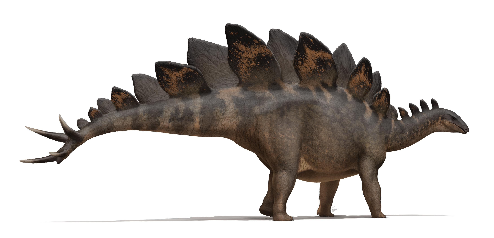
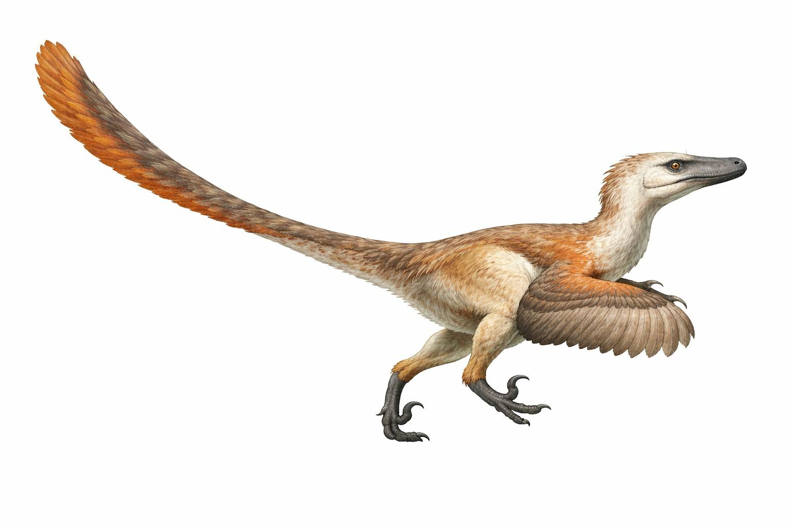

Welcome to the fascinating world of dinosaurs and paleontology!
Paleontology is the study of ancient life through fossils. Paleontologists study fossils to learn about animals, plants and other organisms that lived millions of years ago.

The Tyrannosaurus Rex, also known as T. rex, was a large meat-eating dinosaur. It lived during the Late Cretaceous period.

Triceratops was a plant-eating dinosaur. It had three horns on its face and a large bony frill around its head.

Stegosaurus was known for the large plates along its back and the spikes on its tail. It was a plant-eating dinosaur.

Velociraptor was a smaller meat-eating dinosaur. It was known for its sharp claws and feathers.
Explore our second page for more interesting dinosaur facts and discoveries!
Visit Dinosaur DiscoveriesWant to learn more about fossils and paleontology? Visit the Paleontological Research Institution .